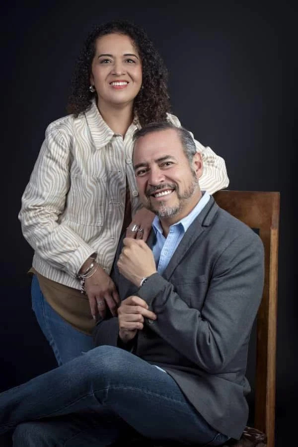
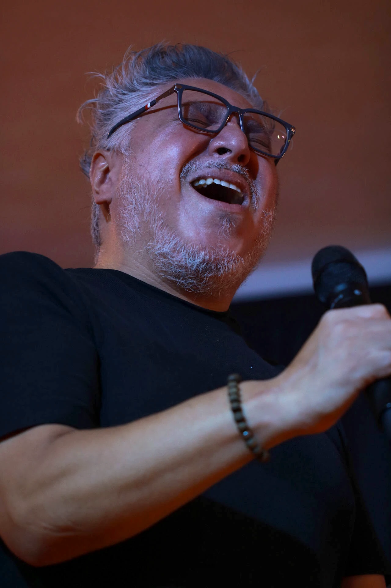
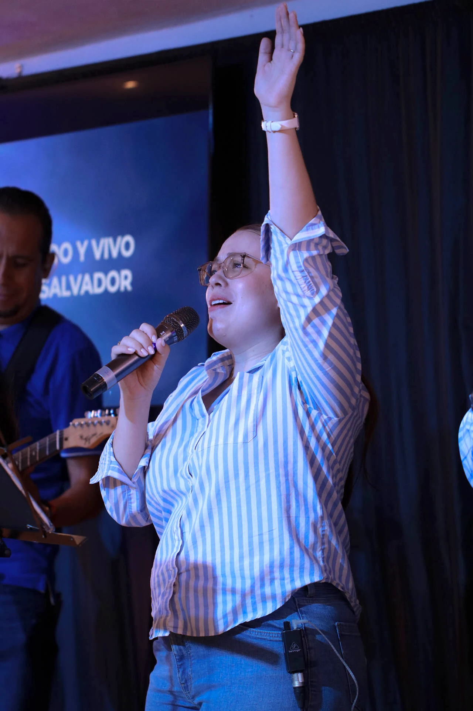
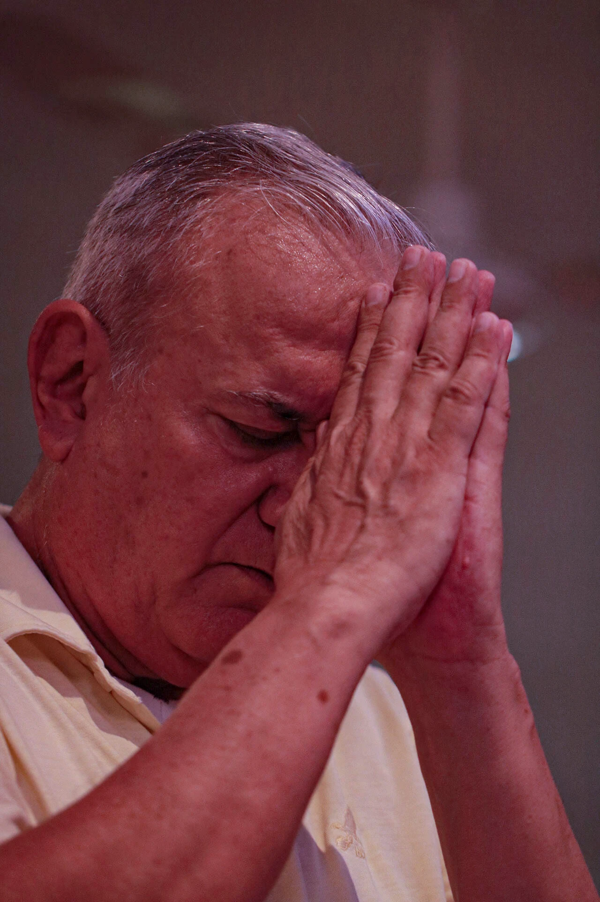
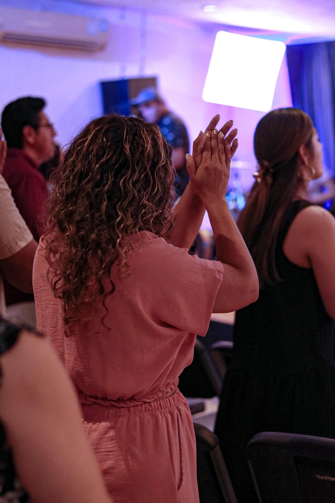
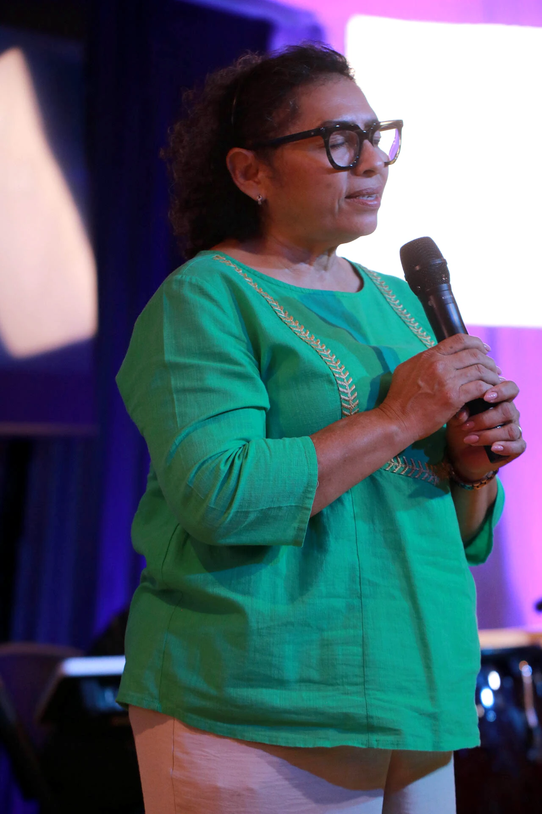

// quiénes convocan

Detrás del congreso, la familia que lo pastorea.

Tres días para mirar nuestra ciudad desde más arriba. Del 14 al 16 de agosto de 2026 pasó — y así lo vivimos.
Antes de liderar hay que reconocer el diseño original. Ahí empieza todo lo demás — no en la agenda, no en el cargo.
Capacidad y talento alineados a algo más grande que tú. De saber quién eres, a saber para qué.
Una ciudad no cambia por accidente. Cambia porque alguien decidió construirla — y decidió no hacerlo solo.

Encabeza una red de más de 150 iglesias en 6 países. Docente permanente en un seminario de formación pastoral con 33 ediciones consecutivas y más de 800 pastores y líderes atendidos.
Integra el equipo pastoral del seminario y viaja junto a Ofir Peña visitando las iglesias de la red. Rigor y calidez en la misma mesa.
Comunidad Más Alto — Mérida, Yucatán.
El congreso nace de la vida real de Comunidad Más Alto en Mérida — la casa que abre sus puertas del 14 al 16 de agosto.





Tres noches, tres conferencias, y una casa que se llenó sin que nadie tuviera que pedirlo. Lo que pasó del 14 al 16 de agosto ya no está en la agenda — está en la gente que volvió distinta a la suya.
Lo que nos digas es lo que va a hacer distinta la siguiente edición. Menos de 2 minutos, y es anónima.
Contestar la encuesta